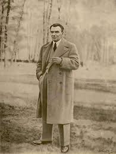
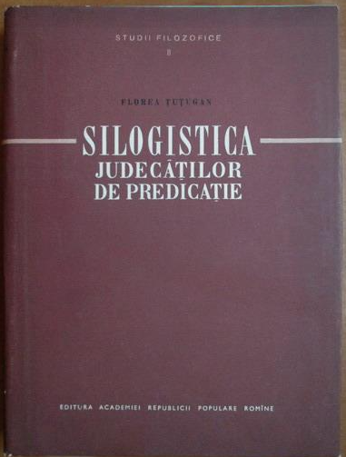
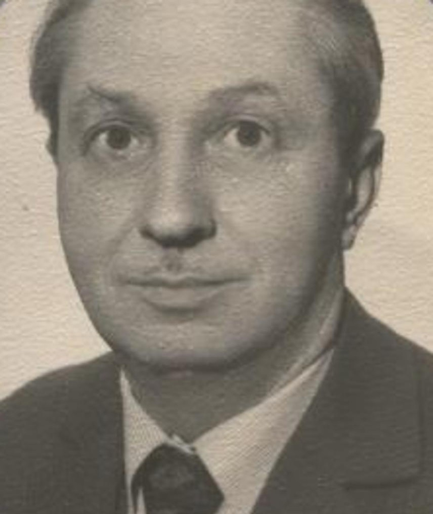
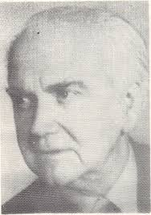
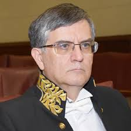
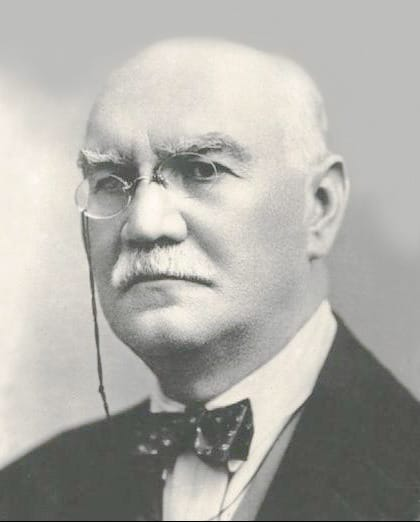
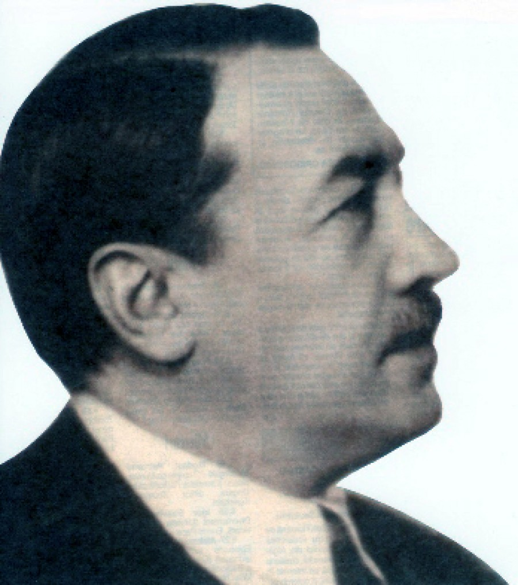
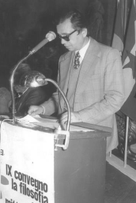

Academicianul Tudorel Dima, cunoscut filosof si logician, s-a nascut la Braila, la 5 noiembrie 1939 si a murit la 1 ianuarie 2019 la varsta de 79 de ani. A urmat cursurile liceului "Nicolae Balcescu" din orasul natal, apoi s-a inscris, in anul 1957, la Facultatea de filosofie si istorie a Universitatii "Al. I. Cuza" din Iasi. In anul 1962 si-a finalizat studiile, specializarea Filosofie, iar in 1973 a obtinut titlul de doctor in filosofie, specialitatea Logica, la Facultatea de filosofie a Universitatii din Bucuresti. Tudorel Dima a avut o legatura stransa fata de Iași, in special de Catedra de istoria filosofiei și logica de la Facultatea de Istorie și Filosofie a Universității "Al. I. Cuza" din Iași. Si a marit mult valoarea academica de a lungul timpului, devenind profesor în perioada 1990-2009 precum si director al Facultatii de Filosofie între 1992-2000. Între 2000 și 2004, a fost cancelarul general al Universității „Al. I. Cuza” din Iași. Între 1995 și 2018, a fost director al Institutului de Cercetări Economice și Sociale „Gh. Zane” al Academiei Române, Filiala Iași Tudorel Dima a coordonat proiecte de cercetare științifică precum „Paradox și antinomie în logica și filosofia”, „Logica și extralogica în cunoaștere” și „Epistemologie cu subiect cunoscător” în cadrul institutului pe care l-a condus. A predat cursuri de logica generală, epistemologie, inducție și probabilitate. A făcut o contribuție remarcabilă în domenii precum epistemologia, filosofia științei, logica deductivă și inductivă și filosofia românească. A creat modele de explicație științifică deductive și inductive, universale și statistice, a dezvoltat o etiologie inductivă cu funcții euristice și argumentative și a studiat relația dintre explicație și intelegere folosind hermeneutica. El a scris lucrări precum „Modele inductive” (1975), „Intre prudenta si eroare”. „Eseu asupra naturii și dinamicii științei” (1978), precum și „Explicatie și intelegere” (vol. I, 1980; vol. II, 1994). A fost membru în colegiile de redacție ale unor reviste prestigioase, cum ar fi "Noesis", "Revue Roumaine de Philosophie", și "Revista de filosofie", și a fost redactor-sef al revistei academice "Symposion", director al revistei "Logos and Episteme International Journal of Epistemology", și director al revistei "Symposion and Applied Inquiries in Philosophy and Social Sciences".
Nae Ionescu s-a nascut la 4 iunie 1890 la Braila,decedat la data de 15 martie 1940 la Bucuresti.
Și-a făcut studiile primare, gimnaziale și liceale în orașul natal.
În timpul liceului, s-a apropiat de cercurile socialiste și l-a cunoscut pe Panait Istrati.
În ultimul an de studii, a fost exmatriculat de la liceul „Nicolae Bălcescu” din Brăila pentru republicanismul său național. A absolvit studii medii la un alt liceu.
Și-a continuat studiile la Facultatea de Litere și Filosofie din București, absolvind în 1912 cu specializarea în filozofie.
După ce a lucrat ceva timp la studii filozofice și la Noua Revista Romana după impreuna cu Elena-Margareta Fotino, a plecat la Göttingen, Germania, în toamna anului 1913 pentru a-și finaliza studiile.
Se intoarce in Romania si isi finalizeaza stagiul militar la Braila.
La 25 noiembrie 1915 s-a căsătorit cu Elena-Margareta Fotino
În ianuarie 1916, a călătorit din nou în Germania împreună cu soția sa pentru a-și continua studiile doctorale.
În august 1916 a fost surprins de intrarea României în război.
A fost închis în lagărul de prizonieri de război Celle-Schloss din Hanovra și a fost eliberat în august 1917.
În 1919 își susține doctoratul în filosofie la Universitatea din München, cu profesorul Bäumker, cu teza Die Logistik als Versuch einer neuen Begründung der Mathematik („Logistica ca o nouă încercare de definire a matematicii”).
Revenit în țară în 1919, este pentru scurtă vreme profesor, apoi director la Liceul militar de la Mănăstirea Dealu pentru ca, în același an, să fie numit asistent la Catedra de Logică și Teoria cunoașterii a profesorului Constantin Rădulescu-Motru.
Nae Ionescu


Florea Țuțugan
Florea Țuțugan nascut la data de 18 iunie 1908, comuna Orădoi, raionul Plenița, regiunea Craiova ,decedat la data 24 ianuarie 1961, București a fost un logician român. A adus contribuții valoroase în studiul silogismului, al implicației, al paradoxurilor logice și al modalităților. Și-a obtinut doctoratul în 1938 pentru lucrari sale în logica modernă: Cercetări asupra operațiilor logice, dar validitatea acestei lucrari a fost contestată de unii logicieni. Este profesor de liceu și ulterior lector la Catedra de logică a Universității din București. Este membru în redacția revistei „Acta Logica”. În domeniul silogismelor, munca sa a început în 1943 cu o serie de articole despre judecățile predicatelor și silogismele, unele sau toate fiind publicate în lucrarea sa fundamentală silogistica judecăților de predicație(1957). El propune aici cel puţin două inovaţii în domeniul silogismului clasic. Introducerea termenului negativ în silogism. Acest lucru le permite autorilor să dezvolte noi „moduri eficiente de silogism care diferă de logica clasică”. Și acest fapt însuși pune sub semnul întrebării validitatea unora dintre legile silogismului clasi. Începe cercetarea prin identificarea tuturor relațiilor care pot fi stabilite. Extinderea silogismului de la propoziții simple la complexe. Florea Țuțugan spune că între doi termeni A și B (termeni ce pot fi „simpli sau complecsi, o clasă de indivizi, atribute sau judecăți”) J.N. Keynes, a descoperit 7 astfel de relații, iar spre deosebire de Albert Manne, care prezintă un set de 16 relații, logicianul român a identificat 7 prezență-absență sau adevăr-fals, numite ,,raporturi unice și bine determinate” între doi termeni. Aceste opt judecăți predicate construiesc toate modurile de silogism valide și ne permit să extindem silogismele clasice la silogismele care includ termeni pozitivi și negativi. Prin descompunerea judecății în disjuncții de proporții clare și bine determinate, autorul este capabil să propună o metodă de determinare a încheierii unui silogism, confirmând stilul silogismelor clasice și, în același timp, adăugând la alte silogisme. Putem construi un metoda și astfel obținem următorul rezultat. În total, 192 de moduri valide.
Leon Birnbaum a fost nascut in 18 iunie 1918, in Cernauti si a decedat in 2010, la varsta de 92 de ani. Dupa moartea acestuia, in 2011 la Liceul Teoretic “Alexandru Papiu Ilarian” din Dej, are loc Concursul de matematică “Leon Birnbaum”, ca prețuire pentru renumele celebrului profesor. A absolvit Liceul ortodox „Mitropolitul Silvestru” și ulterior Universitatea din Cernăuți, Facultatea de Științe – Secția Matematică. A devenit profesor de matematică după ce Bucovina de Nord și Basarabia au fost ocupate în 1940. A fost deportat în Transnistria împreună cu familia sa în timpul celui de-Al Doilea Război Mondial. A supraviețuit lagărului de la Moghilev-Podolsk, dupa care a fost eliberat de Armata Roșie în martie 1944. Motivat de pierderea tatălui său și a altor membri ai familiei sale în timpul războiului, Leon Birnbaum s-a înrolat voluntar în lupta împotriva nazismului. A suferit o rănire în mlaștinile Pripet din Belorusia și s-a întors în România în 1946, unde a lucrat ca profesor de matematică la Strehaia și Turnu Severin. În 1949, a fost mutat în Ardeal, unde a devenit profesor la Liceul „Andrei Mureșanu”. Pe lângă cariera sa de profesor, Birnbaum an obținut o licență în filologie și o diplomă de inginer în tehnologia construcțiilor de mașini, lucrând în acest domeniu începând din 1959. În 1984, a devenit membru al Academiei „Ștefan Odobleja” și al Asociației Internaționale de Cibernetică. A scris „Multa et multum” și „Algebra tripolară și elemente de algebră cuadripolară” în 1983, precum și „Introducere în logosofie”, o teorie a gândirii n-polare. Leon Birnbaum a primit titlul de Cetățean de Onoare al Municipiului Dej pentru munca sa remarcabilă și a fost invitat la congrese și reuniuni internaționale.
Leon Birnbaum


Petre Botezatu
Petre Botezatu, un logician român, a fost ales în post-mortem în Academia Română în 2006. S-a născut la 27 februarie 1911 în Dorohoi și a murit pe 1 decembrie 1981. A fost un scriitor prolific care a studiat muzică, psihologie și filosofie. Botezatu a primit o educație solidă, absolvind Liceul Național din Iași și obținând diplome la Facultatea de Drept și Facultatea de Litere și Filosofie a Universității din Iași. Între 1935 și 1945, a predat filosofie și drept la liceele militare din Chișinău și Iași. În 1945, a obținut doctoratul cu tema „Cauzalitatea fizică și panquantismul”, cu sprijinul lui D. Bădărău. De-a lungul vieții sale academice, a lucrat la diferite posturi, de la șef de lucrări și conferențiar la Catedra de psihopedagogie a Universității din Iași până la activități neobișnuite, cum ar fi munca silnică la „Canal”, zidar la Onești și corist la Filarmonica din Iași. În domeniul logicii, Botezatu a făcut o contribuție semnificativă, sugerând o logică naturală care să includă tehnicile deductive complexe ale științei contemporane. Pentru a generaliza silogistica, a creat modele matematice și an inventat tipuri noi de inducție, cum ar fi inducția diferențială. A dezvoltat o metodă de silogistică asertorico-problemă. A introdus functorul de implicație probabilă și a definit patru functori în logica probabilității. A propus un sistem care permite oricărui cuplu silogistic asertoric să ajungă la o concluzie problematică în cazul în care premisele nu pot duce la o concluzie asertorică. În filosofie, Botezatu a adoptat explicit concepția lui Kant, susținând viziuni realiste asupra cauzalității, spațiului și timpului. Desi a avut polemici cu Kant cu privire la natura apriori a spațiului și timpului, el a văzut spațiul ca o realitate sensibilă și timpul ca o construcție mentală. Viziunea sa asupra libertății morale a fost, de asemenea, influențată de gândirea kantiană, punând accent pe caracterul social al legii morale și guvernarea rațiunii asupra faptelor. Pe baza înțelegerii kantian, ideea sa de antinomie metodologică an implicat diferențierea punctelor de vedere pentru a rezolva un conflict de teze. A discutat cinci axiomatizări și cinci antinomii ale formalizării.
Mircea Dumitru este un filosof român, Nascut în București pe 14 iulie 1960, care a predat logică la Facultatea de Filosofie și an ocupat funcția de rector al Universității din București din 2011 până în 2019. Din 2021, este membru titular al Academiei Române și, de la 4 mai 2022, vicepreședinte al acesteia. Din 2019, este membru al Academiei Europaee. De la iulie 2016 până în ianuarie 2017, an ocupat funcția de ministru al educației în guvernul condus de Dacian Cioloș. Mircea Dumitru este profesor de logică la Facultatea de Filosofie a Universității din București și este specializat în logică filosofică, filosofia limbajului și metafizica analitică a modalității. Competențele sale de predare și cercetare cuprind domenii precum logica filosofică, logica simbolică, limba, metafizica modalităților, epistemologia, filosofia minții și filosofia conștiinței. În plus, a tradus opere de Nozick, Nagel, Wittgenstein, Quine, Forbes și Kripke în română. Prof. Mircea Dumitru a obținut un doctorat în filosofie la Universitatea Tulane (New Orleans, Louisiana) în 1998 cu o teză despre modalitate și incompletitudine. De asemenea, an obținut un doctorat în filosofie la Universitatea din București cu o teză despre neo-fregeanismul și neo-russellianismul în semantica atribuirii de atitudini propoziționale și a referinței directe. Acesta a scris peste cincizeci de articole și capitole în reviste de specialitate pe teme precum logică modală, teorii despre adevăr, semnificație, raționalitate, filosofia lui Wittgenstein, logică contemporană (Quine, Kripke, Kit Fine), esențialism, relativism și logică modală. Între 2000 și 2008, a ocupat funcția de director al Facultății de Filosofie și a ocupat funcția de prorector al Universității din București între 2008 și 2011. Prof. Dumitru a fost rector al Universității din București între 2011 și 2019. Din 2022, este vicepreședinte al Academiei Române. De la iulie 2016 până în ianuarie 2017, an ocupat funcția de Ministru al Educației. Prof. univ. dr. Mircea Dumitru este directorul executiv al Comisiei Fulbright SUA-România în prezent.
Mircea Dumitru


Constantin Rădulescu-Motru
Constantin Rădulescu-Motru nascut in Mehedinți, la 15 februarie 1868,decedat in Bucuresti la 6 martie 1957, a fost un filozof, psiholog, pedagog, om politic, dramaturg, director de teatru român, academician și președinte al Academiei Române între 1938 - 1941, personalitate marcantă a României primei jumătăți a secolului al XX-lea.
Între 1880 - 1885, Constantin urmează liceul la Craiova, pe care îl va termina și absolvi la vârsta de 17 ani.
În 1885, a intrat la Facultatea de Drept și la Facultatea de Literatură și Filosofie în același timp la Universitatea din București.
A format o legătură spirituală puternică și de durată cu profesorul său, Titu Maiorescu, care l-a observat repede.
De asemenea, a urmat cursuri cu profesorii Constantin Dumitrescu-Iaşi, profesorul Bogdan Petriceicu Hașdeu, profesorul V.A.
Urechia şi profesorul Grigore Tosilescu.
În 1888 și-a încheiat studiile de drept cu teza „Despre contracte”.
În 1889, a promovat examenul de licență în filozofie cu lucrarea ``Realitatea empirică și condițiile cunoștinței''.
Constantin Rădulescu-Motru si-a inceput cursul de psihologie cu o definitie etimologica a psihologiei, pe care a numit-o stiinta vietii spirituale, bazata pe cuvintele grecesti psyche (suflet) si logos (stiinta).
El credea că psihologia „căută să ofere o explicație completă a vieții”.
Doar diferite forme de viață spirituală.
În același timp, explică și faptele mentale în ceea ce privește ordinea și coexistența lor.
Ion Petrovici nascut in 2/14 iunie 1882, Tecuci,decedat la 17 februarie 1972, București a fost un filozof român, eseist, memorialist, scriitor, orator și om politic, profesor la Universitatea din Iași, membru titular al Academiei Române, fost Ministru al Educației Naționale.Din 1892 până în 1899 a studiat la Universitatea Sfântul Sava din București.
În toamna anului 1899 a intrat la Facultatea de Litere și Filosofie din București, având printre profesori pe Titu Maiorescu și Nicolae Iorga.
În vara anului 1904, a participat ca membru al delegației studențești la Universitatea din București.
Evenimentul a avut loc la Suceava, aflată atunci sub stăpânire austriacă, pentru a comemora 400 de ani de la moartea lui Ştefan cel Mare.
În 1904 și-a finalizat studiile de filosofie cu lucrarea "o problema de filozofie", iar un an mai târziu, în iunie 1905, Ion Petrovici publică primul premiu universitar românesc cu lucrarea Paralelismul psiho-fizic.
A devenit doctor în filozofie.
Într-adevăr, soarta postumă a lui Ion Petrovici ar fi fost diferită dacă ar fi fost în plină etapă a abilităților sale creatoare după 23 august 1944, când au început epurări politice de amploare sub regimul comunist și în 1964.
El nu ar fi fost arestat și închis.
Alți prizonieri politici se află și ei la o vârstă în care nimeni nu poate înțelege calea gândirii care încearcă să se armonizeze cu a lor.
În domeniul filosofiei, Ion Petrovici a adus contribuții originale prin cercetările sale de logică privind teoria noțiunilor și prin concepția sa metafizică, ce așeza la un loc credința și rațiunea.
Ion Petrovici a fost cel mai cunoscut filosof român din străinătate în perioada interbelică.
Timp de decenii, a scris în mod regulat în cele mai prestigioase reviste de filosofie franceze și germane și a fost adesea invitat să prezide contribuții la conferințe internaționale.
Ion Petrovici


Gheorghe Enescu
Gheorghe Enescu, nascut in 7 ianuarie 1932 în satul Pavăț, comuna Tâmna, din județul Mehedinți, decedat in 27 februarie 1997. Gheorghe Enescu a urmat studiile liceale la București, iar în anul 1952 a fost admis la Facultatea de Filosofie. În anul 1962 a susținut teza de doctorat la Moscova cu titlul Problema adevărului în logica formală. Gheorghe Enescu a publicat mai multe cărți în domeniul logicii: Introducere în logica matematică (1965), Logică şi adevăr (1967) şi Logica simbolică (1971). Prin aceste cărți a încercat să răspundă unor necesități ale momentului în societate. Ulterior a realizat în colaborare cu alți colegi, culegeri de texte ale unor filosofi străini în scopul de a le populariza meritele științifice pe plan autohton (Logică şi filozofie 1966 și Logica Ştiinţei 1970). A făcut, de asemenea, o serie de traduceri (cum ar fi cele ale lui Carnap și Novicov), precum și o serie de studii de specialitate și un instrument util (Dicționarul de logică, 1985). În ultima parte a carierei, Enescu a publicat Teoria sistemelor logice. Metalogica (1976), carte premiată de Academia Română, dar și Tratat de logică (1997).
Mini-Quiz
1. Când a fost publicat primul volum din cartea "Explicație și înțelegere" de Tudorel Dima?
1980
1973
1995
1957
2. În ce an s-a căsătorit Nae Ionescu?
1910
1915
1916
1925
3. În ce an a obținut Florea Țuțugan doctoratul?
1935
1929
1957
1936
4. La ce liceu a predat Leon Birnbaum după mutarea în Ardeal?